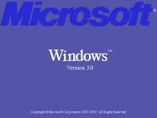
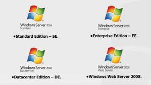
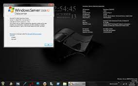

o que é um software?
Um software é um serviço computacional utilizado para realizar ações nos sistemas de computadores. Ou seja: Um software é todo programa presente nos diversos dispositivos (computadores, celulares, televisores, entre outros)
Chrome, calculadora, Windows Media Player, Microsoft Word, AutoCAD, Adobe Photoshop.

sistemas operacionais
O sistema operacional é um software, ou um conjunto de softwares, que tem como papel gerenciar e administrar todos os recursos presentes em um sistema. Isso envolve desde os componentes do hardware e sistemas de arquivos até programas de terceiros.
Chrome, calculadora, Windows Media Player, Microsoft Word, AutoCAD, Adobe Photoshop.
software de apicação
O software aplicativo é, basicamente, o programa utilizado para aplicações dentro do S.O, que não esteja ligado com o funcionamento do mesmo.
Exemplos: Word, Excel, Paint, Bloco de notas, calculadora. Outros exemplos de software aplicativos são os Browsers, isto é, os navegadores utilizados para acesso à internet.
sofrware livre
Alguns mitos precisam ser desvendados quando falamos em Software Livre. Segundo a Free Software Foundation (Fundação para o Software Livre), é considerado livre qualquer programa que pode ser copiado, usado, modificado e redistribuído de acordo com as necessidades de cada usuário.
sistema operacional Linux; linguagens Java e PHP; banco de dados MySQL; programa de escritório LibreOffice (alternativa gratuita do pacote Office da Microsoft); e-mail gratuito Thunderbird.
software web ou web apps
Em resumo, as Web Apps são aplicações de software executadas num navegador de Web e que podem ser acedidos pela Internet. São desenvolvidas por programadores de aplicações e podem ser usados em qualquer dispositivo com um navegador de web e acesso à Internet.25 de jan. de 2023
Twitter. Apesar de poder encontrar o app do twitter nas lojas de aplicativos, a rede social pode ser facilmente acessada pelo navegador do seu dispositivo. ... Pinterest. O Pinterest é uma rede social de compartilhamento de imagens. ... YouTube. ... Uber.
software de inteligência artificial
Os softwares de inteligência artificial, ou software IA, imitam o comportamento humano e os padrões de aprendizado. Um programa de inteligência artificial pode ser utilizado em várias áreas de negócios, desde atendimento ao cliente e vendas (na forma de chatbots) até análise de dados e automação de tarefas de TI.
Há diversos exemplos de inteligências artificiais em nosso dia a dia. Os mais comuns incluem assistentes de voz como Alexa e Siri, algoritmos de redes sociais, ferramentas de reconhecimento facial como Face ID, entre outros.3 de mar. de 2023
Windows 1.0
era mais uma interface gráfica bidimensional para o MS-DOS e foi lançado em 20 de novembro de 1985. Era necessário o MS-DOS 2.0, 256 KB RAM e um disco rígido. Naquela estrutura, o MS-DOS só conseguia suportar 1 MB de aplicações. Era uma primeira tentativa de criar um sistema multitarefa. Nessa época, instalado em computadores XTs que tinham apenas 512Kb de memória, ocupava praticamente toda a memória disponível. O Windows 1.01 não foi nenhum grande sucesso comparado com seus sucessores da década de 1990, devido à limitação do hardware da época. Inicialmente, ele foi lançado em quatro disquetes de 5.25 polegadas de 360 KB cada um. Continha o Reversi (jogo), um calendário, bloco de notas, calculadora, relógio, prompt de comando (uma janela direta para o DOS), Write, Control Panel, Paint e programas de comunicação. Permite a utilização de mouse, janelas e ícones. Nesta versão ainda não havia sobreposição de janelas.
Windows 3.00
foi o primeiro sucesso amplo da Microsoft e foi lançado em 22 de Maio de 1990. Ao contrário das versões anteriores, ele era um Windows completamente novo. Tecnicamente hoje, esta versão é considerada o primeiro sistema gráfico da empresa. Era um sistema gráfico de 16 bits, mas ainda precisava ativar primeiro o MS-DOS para ativar o Windows. Substituiu o MS-DOS Executive pelo Gerenciador de Programas e o Gerenciador de Arquivos que simplificavam as aplicações e tornava o sistema mais prático. Melhorou bastante a interface, o gerenciamento de memória e o sistema multitarefa e incluiu o suporte às fontes True Type. Conseguiu ultrapassar o limite de 1 MB do MS-DOS e permitiu a utilização máxima de 16 MB de aplicações. Naquela época era o único possível de compatibilizar todos os programas das versões anteriores. Utilizava o CPU Intel 80286 e Intel 80386. Também existe a versão 3.00a, que foi lançada em 31 de Outubro de 1990. Existem cinco versões especiais do Windows 3.00: Windows with Multimedia Extensions - foi lançada por vários fabricantes de periféricos multimédia, por isso ela não tem uma certa data de lançamento. Tinha recursos multimédia (semelhantes aos do Windows 3.10) e era um pouco mais estável. Windows 3.10 - foi lançada em 6 de Abril de 1992 e tinha softwares para multimédia e fontes TrueType (aumenta muito o número de tipos de letras disponíveis) e era mais estável do que o Windows 3.00. Ele era apresentado em oito disquetes de alta densidade de 3,5" de 1,44 MB cada um. Nesta versão permitiu o uso de um maior número de línguas de trabalho, incluindo o Cirílico e o Japonês. O Minesweeper substituiu o Reversi. Windows for Workgroups 3.11 - foi lançada 28 de Outubro de 1992, e era praticamente o Windows 3.10 com suporte a rede, fax-modem e correio eletrônico. Ele era apresentado em nove disquetes de alta densidade de 3,5" de 1,44 MB cada um. Windows 3.20 - nesta versão limitou-se em acrescentar o Chinês como uma língua de trabalho. Windows for Workgroups 3.12 - foi lançada 8 de Novembro de 1993 e era praticamente a revisão da versão anterior. Windows for Pen Computing - foi lançada em Abril de 1994 e tinha todos os recursos do Windows for Workgroups 3,11 mais o suporte a canetas para PCs.
Windows 95
Foi lançada em 24 de Agosto de 1995, sendo uma nova versão do Windows completamente novo, e para muitos não lembra os Windows da família 3.xx. O salto do Windows 3.0 ao Windows 95 era muito grande e ocorreu uma mudança radical na forma da apresentação do interface. Introduziu o Menu Iniciar e a Barra de Tarefas. Enquanto Nesta versão, o MS-DOS perdeu parte da sua importância visto que o Windows já consegue ativar-se sem precisar da dependência prévia do MS-DOS. As limitações de memória oferecidas ainda pelo Windows 3.0 foram praticamente eliminadas nesta versão. O sistema multitarefa tornou-se mais eficaz. Utilizava o sistema de ficheiros FAT-16 (VFAT). Os ficheiros (arquivos) puderam a partir de então ter 255 caracteres de nome (mais uma extensão de três caracteres que indica o conteúdo do arquivo, facilitando assim sua identificação e podendo ser associado para abertura em determinados programas). O salto foi enorme, e o lançamento foi amplamente divulgado pela imprensa, inclusive pelas grandes redes de televisão. Existe uma outra versão do Windows 95, lançada no início de 1996, chamada de Windows 95 OEM Service Release 2 (OSR 2), com suporte nativo ao sistema de arquivos FAT32. Já o Windows 95, a partir da revisão OSR 2.1, incluía o suporte nativo ao Barramento Serial Universal (USB) e Ultra DMA (UDMA).
Foi lançada ainda uma versão especial, o Windows 95 Plus!, com um pacote de diferentes temas visuais e sonoros para personalização do sistema operacional. Esta versão também incluía o navegador Internet Explorer.Windows 98 SE (Segunda Edição)
O Windows 98 Segunda Edição foi lançado em 1999 e esta versão visava corrigir as falhas (bugs) e resolver os problemas de instabilidade do Windows 98. Incluía drivers e programas novos. Substituiu o Internet Explorer 4 pela versão 5, que era mais rápida, e introduziu a Internet Connection Sharing, que permite a partilha de uma "rede de internet" para muitos computadores. Acrescentou também o NetMeeting 3 e suporte a DVD. Muitos utilizadores classificam este sistema como um dos melhores da Microsoft, apesar de se tratar de um sistema operacional sem suporte a multitarefa real, e ainda tendo o DOS como o seu núcleo principal… Mantinha o mesmo núcleo.
Windows ME (Millenium Edition)
Foi lançado pela Microsoft em 14 de Setembro de 2000, sendo esta a última tentativa de disponibilizar um sistema baseado, ainda, no antigo Windows 95. Essa versão trouxe algumas inovações, como o suporte às máquinas fotográficas digitais, aos jogos multi jogador na Internet e à criação de redes domésticas (home networking). Introduziu o Movie Maker e o Windows Media Player 7 (para competir com o Real Player) e atualizou alguns programas. Introduzia o recurso "Restauração de Sistema" (que salvava o estado do sistema em uma determinada data, útil para desfazer mudanças mal sucedidas) e o Internet Explorer 5.5. Algumas pessoas creem que este foi apenas uma terceira edição do Windows 98 e que foi apenas um produto para dar resposta aos clientes que esperavam por uma nova versão. Muitas pessoas achavam-no defeituoso e instável, o que seria mais tarde comprovado pelo abandono deste segmento em função da linha OS/2-NT4-2000-XP. Na mesma época, foi lançada uma nova versão do Mac OS X e a Microsoft, com receio de perder clientes, lançou o Windows ME para que os fãs aguardassem o lançamento do Windows XP.
Windows NT
O Windows NT foi lançado pela primeira vez pela Microsoft em 1993 com o objetivo principal de fornecer mais segurança e comodidade aos utilizadores de empresas e lojas (meio corporativo), pois as versões do Windows disponíveis até então não eram suficientemente estáveis e confiáveis. Foi um sistema operativo de 32 bits, multitarefa e multiutilizador. A sigla NT significa Nova Tecnologia (New Technology em inglês). Trazia a funcionalidade de trabalhar como um servidor de arquivos. Os NTs têm uma grande estabilidade e têm a vantagem de não ter o MS-DOS. A arquitetura desta versão é fortemente baseada no micronúcleo. Assim, em teoria, pode-se remover, atualizar ou substituir qualquer módulo sem a necessidade de alterar o resto do sistema. Cogita-se que boa parte do código fonte do Windows NT seja baseado no OS/2, um sistema operacional desenvolvido conjuntamente pela Microsoft e IBM, mas desentendimentos entre as duas companhias levaram ao fim da parceria e a IBM passou a se dedicar sozinha ao OS/2 e a Microsoft ao Windows. O Windows NT também tinha elementos dos sistemas VMS e Lan Manager. Ele não era muito popularizado até ao aparecimento do Windows 2000 (NT 5.0). O Windows NT aceita três tipos de sistemas de arquivos: FAT (Windows NT 3.xx e Windows NT 4.0); FAT32 (Windows 3.51 com PowerPack, Windows 2000, Windows XP e Windows 2003) e NTFS (Windows NT 3.xx, Windows NT 4.0, Windows 2000, Windows XP, Windows 2003, Windows Vista, Windows 7, Windows 8, Windows 8.1 e Windows 10). Existem edições especiais: NT 3.1 é visualmente muito semelhante ao Windows 3.1, mas usa um núcleo muito mais avançado. Foi lançado em 1993. Pode ser utilizado no Intel x86, DEC Alpha e MIPS CPUs. NT 3.5 foi lançado em 1994 e era semelhante ao NT 3.1. NT 3.51 foi lançado em 1995 e trouxe algumas inovações nas áreas de gestão e distribuição de energia, podia executar um grande número de aplicações Win32 do Windows 95. Mas foi rapidamente ultrapassado porque não oferecia bons serviços de Internet. NT 4.0 foi lançado em 1996 tinha uma interface semelhante ao Windows 95 e era mais estável mas menos flexível do que o Windows 95. Introduziu o Web Server, o Microsoft FrontPage, softwares de criação e gestão de web sites, o Microsoft Transaction Server e o Microsoft Message Queuing (o MSMQ melhora a comunicação). NT 5.0 só foi produzido em versão Beta e posteriormente foi mudado para Windows 2000. Tinha uma interface semelhante ao Windows 98. Este Windows permaneceu sem popularidade até o fim da era 9x/ME, quando lançaram o Windows 2000. Nesta edição também foi implementada a ideia de Serviços (ou Processos), no qual o sistema operacional trabalha a partir de serviços, tendo assim menores chances de travar, pois era possível reinicializar apenas um serviço ao invés da máquina por inteiro. Estas versões do Windows aceitam quatro tipos de sistemas de arquivos: FAT 12 e 16 - Windows 1.0x, Windows 2.xx, Windows 3.xx, Windows 95, Windows 98, Windows ME, Windows NT 3.xx e Windows NT 4.0; Windows 2000, Windows XP (32 bits) e Windows Server 2003 (32 bits) ; Windows Vista (32 bits), Windows 7 (32 bits) e Windows Server 2008 (32 bits). FAT 32 - Windows NT 3.51 (com o PowerPack), Windows NT 4.0, Windows 95 OSR 2.x, Windows 98, Windows 2000, Windows XP e Windows Server 2003; Windows Vista, Windows 7 e Windows Server 2008 e 2008 R2 (Actualmente). NTFS - Windows NT 3.xx, Windows NT 4.0, Windows 2000, Windows XP, Windows Server 2003, Windows Vista, Windows 7 e Windows Server 2008 e 2008 R2 (Actualmente).
Windows 2000 (NT 5.0)
O lançamento desse Windows, ocorreu em 17 de Fevereiro de 2000 (apesar do sistema estar datado 1999), que também era chamado de Windows NT 5.0 na sua fase Beta, marcou o começo da era NT (Nova Tecnologia) para usuários comuns. Sofreu problemas de aceitação no mercado, devido a falhas de segurança, como, por exemplo, o armazenamento de senhas em um arquivo próprio e visível, o que facilitava a ação de crackers e invasores. Em relação aos Windows anteriores, sua interface gráfica apresentava sutis diferenças como um tom cáqui nos menus e na barra de tarefas e ícones redesenhado, o mesmo que o ME usaria tempos depois. Apesar dos problemas iniciais, trata-se de um sistema operacional bastante estável em 32 bits, multiusuário e multitarefa real. E por um bom tempo muitos o preferiram em relação ao seu sucessor, o XP[carece de fontes]. Nesta versão foi iniciada a criação e utilização de um novo sistema de gerenciamento, baseado em LDAP, chamado pela Microsoft de Active Directory, o que trazia diversas funções, como suporte a administração de usuários e grupos (como no NT 3.51 e 4.0) além das novas opções como computadores, periféricos (impressoras, etc…) e OU´s (Organization Unit). Versões: Professional, Server, Advanced Server, Datacenter Server e Small Business Server. Windows Neptune
Windows Odyssey
Em meados de 1999 a 2000, a Microsoft estava desenvolvendo um sistema operacional que foi cancelado pela empresa, o Windows Odyssey. Ele sucederia o Windows 2000 e a Microsoft não quis seguir adiante com este sistema operacional, ninguém sabe o motivo do cancelamento da empresa. Até hoje nada foi anunciado a não ser o aviso que o mesmo estaria cancelado. No lugar do Windows Odyssey veio o Windows XP. Outras informações indicam que foi cancelado e depois o Windows Odyssey se tornaria o Windows Vista. Se esta informação for verdadeira, a Microsoft talvez teria cancelado temporariamente o sistema por ser muito a frente de seu tempo ou que necessitava de um hardware que na época era inacessível, embora existam rumores de que, como foi cancelado o Windows Odyssey, nunca se saberá de fato como foi esta parada imediata no desenvolvimento deste sistema operacional.[2][3]
Windows XP (NT 5.1)
Lançado em 25 de outubro de 2001 essa versão é também conhecida como Windows NT 5.1. Roda em sistemas de arquivo FAT 32 ou NTFS. A sigla XP deriva da palavra eXPeriência (eXPerience). Uma das principais diferenças em relação às versões anteriores é quanto à interface. Trata-se da primeira mudança radical desde o lançamento do Windows 95. Baseada no OS/2 da IBM, cujos alguns direitos são compartilhados entre a IBM e a Microsoft, e, seguindo a linha OS/2-NT-2000-XP, a partir deste Windows, surgiu uma nova interface. Nota-se uma melhoria em termos de velocidade em relação às versões anteriores, especialmente na inicialização da máquina. O suporte a hardware também foi melhorado em relação às versões 9x-Millenium, abandonada definitivamente. Esta versão do Windows foi considerada por diversos anos como a melhor versão lançada pela Microsoft para usuários domésticos, possui uma interface bastante simples e inovadora. Como acontece na maioria dos lançamentos de nova versão do Sistema Operacional, o aumento nos requisitos mínimos de recurso (como 128Mb de memória RAM) pode ser considerado entrave no início de suas vendas. Versões: Home, Professional, Tablet PC Edition, Media Center Edition, Embedded, Starter Edition e 64-bit Edition O nome de código desta versão, antes do lançamento era Whistler.
Windows Server 2003 (NT 5.2)
Versão do Windows lançada em 24 de Abril de 2003, também conhecida como Windows NT 5.2, é o sucessor das edições Server do Windows 2000 para o ambiente corporativo. Novidades na área administrativa, Active Directory, e automatização de operações. Esta versão do Windows é voltada principalmente para servidores e empresas de grande porte, possui recursos de servidores na ativa e garante a segurança de dados. Versões: Web Edition, Standard Edition (x86 e x64), Enterprise Edition (x86 e x64), Data Center Edition x64 e Small Business Server (x86 e x64). Windows Server 2003 R2 (x86 e x64) Na versão Windows Server 2003 R2, Foram introduzidas muitas novidades se comparado ao seu antecessor.
Windows Vista (NT 6.0)
Também conhecido como Windows NT 6.0 e pelo nome de código Longhorn, o Windows Vista tem seis versões, uma delas simplificada e destinada aos países em desenvolvimento. Foi lançado em novembro de 2006 e suas vendas ao público começaram em 30 de Janeiro de 2007. As seis edições diferentes do Windows Vista foram projetadas para se ajustar ao modo como o usuário pretende usar seu PC. Ele tem uma interface intitulada Windows Aero, com recursos de transparência, sistema de alternância 3D de janelas chamado Flip 3D (ativado pelo atalho Logotipo do Windows + Tab) e visualização de miniaturas ao passar o mouse sobre um item na barra de tarefas e na alternância através do comando Alt+Tab. O Aero Glass não é disponibilizado nas Versões Starter e Basic. Além das inovações gráficas, o Windows Vista inovou ao incluir o Windows Media Center como um "centro" de entretenimento digital nas versões a partir do Vista Home Premium. Também trouxe diversas ferramentas integradas para segurança, como o Windows Defender e o Windows Firewall (presente a partir do Windows XP Service Pack 2). Além disso, é nativamente preparado para a alta definição. A versão básica e popular do Windows Vista (Limitada): Vista Starter Edition, destinado aos mercados emergentes e países em desenvolvimento. São duas versões destinadas ao usuário doméstico: Vista Home Basic Vista Home Premium As duas versões voltadas para o público corporativo são: Vista Business (projetado para atender às necessidades de empresas de todos os portes) Vista Enterprise (necessidades de grandes empresas globais) Vista Ultimate A versão Ultimate é a edição mais abrangente do Windows Vista. Reúne todos os recursos de infra-estrutura avançados de um sistema operacional empresarial, todos os recursos de gerenciamento e eficiência de um sistema operacional móvel, e todos os recursos de entretenimento digital de um sistema operacional voltado ao consumidor As inovações e melhorias na interface e utilização do Sistema Operacional (SO) exigiram maior capacidade do hardware, o que provocou a manutenção do Windows XP em boa parte dos computadores. O Windows Vista Ultimate Edition é a versão do Windows Vista que mais requer recursos do computador. Para que o desempenho seja razoável, a Microsoft recomenda um processador de 1.8Ghz (preferencialmente Dual-Core) e 1GB de memória RAM, sendo necessária uma placa de vídeo compatível com o DirectX 9.0, pixel shader 2.0 e 128mb de memória de vídeo para usufruir da transparência das janelas de Flip 3D (Windows Aero). Ademais, devido as modificações no núcleo e no código feitas no Windows Vista, houve durante o período inicial grande incompatibilidade de driver de dispositivo para os periféricos do computador, que foi em boa parte solucionada ao longo do tempo com o lançamento de drivers compatíveis pelas fabricantes. Com os erros e acertos do Windows Vista, a Microsoft passou então a desenvolver seu sucessor, o Windows 7, com todas as suas funcionalidades, acrescidas de melhorias, porém atenta a paridade entre o nível de recursos de hardware exigido e o presente no mercado de forma geral, bem como o uso de retrocompatibilidade de drivers do Windows Vista. Windows Server 2008
Windows Server 2008 Standard Edition
Em substituição ao Windows Server 2003, foi projetada para fornecer serviços e recursos para outros sistemas em uma rede. O sistema operacional tem um abundante conjunto de recursos e opções de configuração. O Windows Server 2008 Standard Edition dá suporte a 2-way e 4-way SMP (multiprocessamento simétrico) e a até 4 gigabytes de memória em sistemas de 32 bits e 32 GB em sistemas de 64 bits.
Windows Server 2008 Enterprise Edition
Tal versão estende os recursos fornecidos no Windows Server 2008 Standard Edition para proporcionar maior estabilidade e disponibilidade e dar suporte a serviços adicionais como o Cluster e Serviço de Federação do Active Directory. Também dá suporte a sistemas de 64 bits, memória RAM hot-swap e non-uniform memory access (NUMA). Os servidores enterprise podem ter até 32 GB de RAM em sistemas x86 e dois terabytes (TB) de RAM em sistemas de 64 bits e 8 CPUs.
Windows Server 2008 Datacenter Edition
Versão mais robusta do Windows Server 2008 com aperfeiçoamentos nos recursos de cluster e suporte a configurações de memória muito amplas com até 64 GB de RAM em sistemas x86 e dois TB RAM em sistemas de 64 bits. Tem requisito mínimo de CPU e pode dar suporte a até 64 CPUs.
Windows Web Server 2008
Versão Web Edition do Windows Server 2008. Uma vez que foi projetada para fornecer serviços Web para a implantação de sites e aplicativos baseados nesta, essa versão do servidor só dá suporte a recursos relacionados. Especialmente, ela inclui o Microsoft.NET Frameworks, o Microsoft Internet Information Services (IIS), o ASP.NET, além do servidor de aplicativos e recursos de balanceamento de carga de rede. No entanto, não possui vários outros recursos, incluindo o Active Directory, e exige a instalação do server core para obter alguma funcionalidade padrão. O Windows Web Server 2008 dá suporte a até 2 GB de RAM e 2 CPUs.
Windows 7
Anteriormente com o codinome Vienna, este é o sucessor do Windows Vista que inclui uma série de novos recursos e melhorias. Teve sua versão Beta lançada em Janeiro de 2009 para todos aqueles que se interessassem por testá-lo (conhecidos como Beta-Testers), sendo distribuído gratuitamente pela Microsoft em seu site (versão em inglês). Na versão Beta já se pode perceber pequenas mudanças, como maior integração a processador de Múltiplos Núcleos e inicialização mais rápida. Apresentou ainda uma versão Release Candidate em Maio de 2009 com diversas melhorias em relação à versão Beta e já bastante próxima a versão final. Foi lançado em 22 de Outubro de 2009. Inclui inovações na interface gráfica, utilizando ícones maiores na barra de tarefas (taskbar), semelhante ao Mac OS (dockstation), com maior nível de transparente em relação ao Windows Vista. Na nova barra de tarefas o usuário pode fixar programas (como fazia nas versões anteriores através da barra Inicialização Rápida), porém diferentemente, ao abrir um programa fixado o mesmo atalho se transforma na janela aberta, não exibindo um segundo ícone na barra de tarefas. Além disso, ao clicar sobre um ícone na barra de tarefas e arrastar o mouse para cima com o botão pressionado é exibida a Jump List, com uma série de atalhos próprios do programa e lista de arquivos exibidos recentemente por ele. Há também a função Aero Shake utilizada para minimizar ou maximizar todas as janelas, clicando na parte superior de uma janela (área transparente) e chacoalhando-a para os lados rapidamente. Também é possível redimensionar uma janela até as bordas superior/inferior clicando e arrastando o mouse sobre a borda da janela. Há também o Aero Peek, retângulo transparente localizado na extremidade direita da barra de tarefas que permite visualizar a área de trabalho ao passar o mouse sobre ele ou ir para a área de trabalho caso clicado. Também nota-se melhoria no reconhecimento de voz em relação ao Windows Vista. Na versão Ultimate é possível receber como Atualização Opcional outro idioma para o Windows como um todo. O Windows 7 deixou de ser oferecido para vendas em 2012. O usuário podia conferir se seu computador tem capacidade para rodar o Windows 7 no «site». www.microsoft.com da Microsoft.
Windows 8
Lançado em 2012, Windows 8 é um sistema operacional da Microsoft para computadores pessoais, portáteis (lê-se Notebooks), netbooks e tablets. É o sucessor do Windows 7. Foi anunciado oficialmente por Steve Ballmer, diretor executivo da Microsoft, durante a conferência de pré-lançamento do sistema operacional. Segundo a empresa, este sistema operacional será um sistema para qualquer dispositivo, com uma interface totalmente nova, adaptada para dispositivos sensíveis ao toque.
Windows 8.1 é semelhante ao Windows 8, porém para a Microsoft é um erro pensar que esta versão é uma atualização do Windows 8, a própria Microsoft o classifica como uma nova versão e não como uma atualização. Projetados com base no Windows 8 traz aprimoramentos em recursos de personalização e de pesquisa, em aplicativos, na Windows Store e na conectividade em nuvem. Além disso, apresentam os recursos de segurança e confiabilidade que você espera do Windows. Eles são rápidos e foram desenvolvidos para funcionar em diferentes dispositivos, especialmente naqueles da nova geração de dispositivos de toque. O Windows 8.1 pode ser obtido gratuitamente pela 'Loja de Aplicativos do Windows' por quem possuía o Windows 8 Um ano após o lançamento, o Windows 8.1 consegue passar em dezembro de 2014 o Windows XP que era o segundo colocado, o motivo foi o fim do suporte (completamente) do Windows XP Service Pack 3 por parte da Microsoft, deixando de entregar atualizações ao sistema lançado em 2001.
Lançado em 2012, Windows 8 é um sistema operacional da Microsoft para computadores pessoais, portáteis (lê-se Notebooks), netbooks e tablets. É o sucessor do Windows 7. Foi anunciado oficialmente por Steve Ballmer, diretor executivo da Microsoft, durante a conferência de pré-lançamento do sistema operacional. Segundo a empresa, este sistema operacional será um sistema para qualquer dispositivo, com uma interface totalmente nova, adaptada para dispositivos sensíveis ao toque.
Windows 10
Windows 10 foi lançado pela Microsoft em 29 de Julho de 2015, e todos os usuários do Windows Phone 8.1, Windows 7, 8 e 8.1 terão a atualização para o novo sistema gratuitamente. Entre as principais novidades do novo sistema operacional estão: A volta do Menu Iniciar Assistente pessoal Cortana Integração com tablets e smartphones (Windows 10 Mobile) e Xbox One O sucessor (mas não substituto definitivo) do Internet Explorer, o Microsoft Edge Volta do Aero Glass (melhorado), do Windows 7 Aplicativos universais (adaptáveis em PC's, notebooks, tablets e smartphones) Novos aplicativos do Windows: Fotos, Vídeos, Música, Loja, etc. Este sistema é considerado por muitos usuários o melhor Windows da história, por suas drásticas mudanças com base na opinião de seus usuários (através do programa Windows Insider).
Windows 11
O Windows 11 foi lançado pela Microsoft em 24 de Junho de 2021 e todos os usuários do Windows 10 terão atualização gratuita para o novo sistema. A atualização gratuita entrou em teste público na semana seguinte ao lançamento, e será distribuída para todos entre o final de 2021 e o começo de 2022. Entre as principais características do Windows 11, podem ser destacados o "Menu Iniciar" centralizado, um novo modo de gerenciar janelas, ícones remodelados, widgets no desktop, wallpapers para modos claro e escuro e uma maior conectividade com o Xbox.
![]()
ArchLinux
É uma distribuição não comercial e livre de Linux. O usuário tem liberdade para definir o que vai ser instalado no sistema e os pacotes são disponibilizados como foram liberados pelos desenvolvedores originais, sem qualquer alteração. A palavra “arch” em inglês significa “arco” e reflete a ideia que o objetivo da distribuição é ser apenas a estrutura de apoio dos softwares desenvolvidos por outros autores.
![]()
CentOS
É uma distribuição Linux de classe corporativa derivada de códigos fonte gratuitamente distribuídos pela Red Hat Enterprise Linux e mantida pelo CentOS Project. CentOS significa “Community ENTerprise Operating System”.
![]()
Clear Linux
É uma distribuição Rolling Release. O projeto é focado no hardware Intel (tudo o que for da Intel estará altamente otimizado a fim de garantir um excelente desempenho) e no cenário de um ambiente de nuvem com muitas máquinas.
![]()
Cloude Linux
É uma distribuição Linux comercializada para provedores de hospedagem compartilhada. É desenvolvido pela empresa de software CloudLinux e é baseado no sistema operacional CentOS.
![]()
Debian
É um sistema operacional de distribuição não comercial e livre que usa o kernel Linux ou kfreebsd (kernel do FreeBSD). Como o Debian se baseia no projeto GNU, normalmente é chamado de Debian GNU/Linux ou Debian Gnu/kFreeBSD. Atualmente várias distribuições comerciais se baseiam no Debian como, por exemplo, Kurumin e Ubuntu. O nome “Debian” vem da junção do nome do principal fundador, Ian, com o de sua esposa, Debra.
![]()
Deeph
É uma distribuição baseada no Debian. Apresenta uma interface própria chamada Deepin Desktop Environment (DDE), além de uma acervo de aplicações próprias. É desenvolvida pela Wuhan Deepin Technology Company Limited, localizada em Wuhan, China.
Elementary OS
É uma distribuição baseada no Ubuntu com suporte de longo prazo (LTS) e utiliza o ambiente de desktop Pantheon cuja interface visa ser intuitiva para novos usuários sem utilizar muitos recursos.
![]()
Gentoo
É um sistema operacional livre que pode tanto ser baseado em Linux quanto em FreeBSD. Usa uma tecnologia chamada Portage que possibilita ao usuário customizar o sistema como quiser (ele escolhe os pacotes que irão fazer parte do sistema operacional). “Gentoo” é nome de uma das espécies de pinguim da Antártida.
![]()
Fedora
É uma distribuição não comercial do Linux voltada para desktop e patrocinada pela Red Hat Enterprise Linux (dona da marca Fedora). Ela nasceu quando a empresa norte-americana decidiu investir em uma versão comercial do Linux, o Red Hat. O nome “Fedora” corresponde ao tipo de chapéu que aparece no logotipo da Red Hat.
![]()
Kali
É uma distribuição não comercial voltada para os profissionais da área de segurança da informação. Ela disponibiliza várias ferramentas para detectar falhas de segurança que permitem a invasão de um sistema, por isso ela é definida como Penetration Testing Distribution. A distribuição Kali substituiu a distribuição backtrack que foi descontinuada (2013). Kali é o nome de uma deusa hindu com força destrutiva e significa “the black one” em sânscrito.
Mageia
É uma distribuição criada a partir de um fork (novo projeto) da distribuição Mandriva (descontinuado a partir de 2015). Ela é desenvolvida sob a coordenação da Mageia.Org, uma associação francesa sem fins lucrativos.
![]()